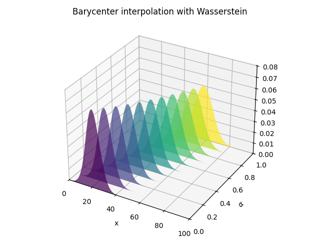
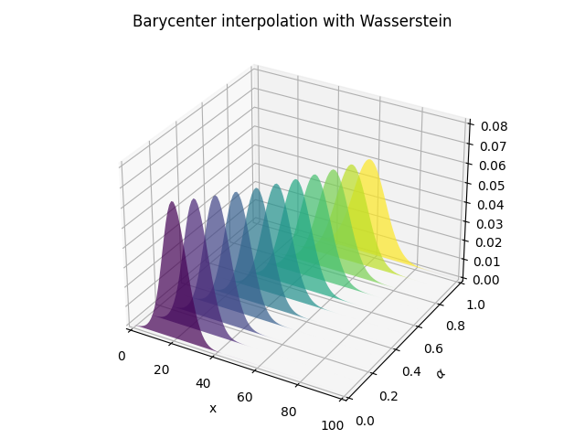

Note
Click here to download the full example code
1D Wasserstein barycenter demo
This example illustrates the computation of regularized Wassersyein Barycenter as proposed in [3].
[3] Benamou, J. D., Carlier, G., Cuturi, M., Nenna, L., & Peyré, G. (2015). Iterative Bregman projections for regularized transportation problems SIAM Journal on Scientific Computing, 37(2), A1111-A1138.
# Author: Remi Flamary <remi.flamary@unice.fr>
#
# License: MIT License
# sphinx_gallery_thumbnail_number = 4
import numpy as np
import matplotlib.pylab as pl
import ot
# necessary for 3d plot even if not used
from mpl_toolkits.mplot3d import Axes3D # noqa
from matplotlib.collections import PolyCollection
Generate data
n = 100 # nb bins
# bin positions
x = np.arange(n, dtype=np.float64)
# Gaussian distributions
a1 = ot.datasets.make_1D_gauss(n, m=20, s=5) # m= mean, s= std
a2 = ot.datasets.make_1D_gauss(n, m=60, s=8)
# creating matrix A containing all distributions
A = np.vstack((a1, a2)).T
n_distributions = A.shape[1]
# loss matrix + normalization
M = ot.utils.dist0(n)
M /= M.max()
Plot data
pl.figure(1, figsize=(6.4, 3))
for i in range(n_distributions):
pl.plot(x, A[:, i])
pl.title('Distributions')
pl.tight_layout()
Barycenter computation
alpha = 0.2 # 0<=alpha<=1
weights = np.array([1 - alpha, alpha])
# l2bary
bary_l2 = A.dot(weights)
# wasserstein
reg = 1e-3
bary_wass = ot.bregman.barycenter(A, M, reg, weights)
pl.figure(2)
pl.clf()
pl.subplot(2, 1, 1)
for i in range(n_distributions):
pl.plot(x, A[:, i])
pl.title('Distributions')
pl.subplot(2, 1, 2)
pl.plot(x, bary_l2, 'r', label='l2')
pl.plot(x, bary_wass, 'g', label='Wasserstein')
pl.legend()
pl.title('Barycenters')
pl.tight_layout()
Barycentric interpolation
pl.figure(3)
cmap = pl.cm.get_cmap('viridis')
verts = []
zs = alpha_list
for i, z in enumerate(zs):
ys = B_l2[:, i]
verts.append(list(zip(x, ys)))
ax = pl.gcf().gca(projection='3d')
poly = PolyCollection(verts, facecolors=[cmap(a) for a in alpha_list])
poly.set_alpha(0.7)
ax.add_collection3d(poly, zs=zs, zdir='y')
ax.set_xlabel('x')
ax.set_xlim3d(0, n)
ax.set_ylabel('$\\alpha$')
ax.set_ylim3d(0, 1)
ax.set_zlabel('')
ax.set_zlim3d(0, B_l2.max() * 1.01)
pl.title('Barycenter interpolation with l2')
pl.tight_layout()
pl.figure(4)
cmap = pl.cm.get_cmap('viridis')
verts = []
zs = alpha_list
for i, z in enumerate(zs):
ys = B_wass[:, i]
verts.append(list(zip(x, ys)))
ax = pl.gcf().gca(projection='3d')
poly = PolyCollection(verts, facecolors=[cmap(a) for a in alpha_list])
poly.set_alpha(0.7)
ax.add_collection3d(poly, zs=zs, zdir='y')
ax.set_xlabel('x')
ax.set_xlim3d(0, n)
ax.set_ylabel('$\\alpha$')
ax.set_ylim3d(0, 1)
ax.set_zlabel('')
ax.set_zlim3d(0, B_l2.max() * 1.01)
pl.title('Barycenter interpolation with Wasserstein')
pl.tight_layout()
pl.show()
- 
- 
Out:
/home/circleci/project/examples/barycenters/plot_barycenter_1D.py:126: MatplotlibDeprecationWarning: Calling gca() with keyword arguments was deprecated in Matplotlib 3.4. Starting two minor releases later, gca() will take no keyword arguments. The gca() function should only be used to get the current axes, or if no axes exist, create new axes with default keyword arguments. To create a new axes with non-default arguments, use plt.axes() or plt.subplot().
ax = pl.gcf().gca(projection='3d')
/home/circleci/project/examples/barycenters/plot_barycenter_1D.py:148: MatplotlibDeprecationWarning: Calling gca() with keyword arguments was deprecated in Matplotlib 3.4. Starting two minor releases later, gca() will take no keyword arguments. The gca() function should only be used to get the current axes, or if no axes exist, create new axes with default keyword arguments. To create a new axes with non-default arguments, use plt.axes() or plt.subplot().
ax = pl.gcf().gca(projection='3d')
Total running time of the script: ( 0 minutes 0.520 seconds)